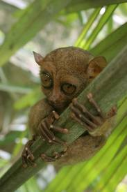
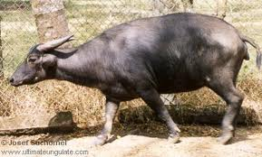

Many native animals are now being near threatened to extinction,such as the Tarsier,the Philippine Eagle,and the Mindoro Carabao
Tarsier:The Philippine Tarsier is an incredibly unique and interesting creature. These nocturnal animals are one of the
worlds smallest primates (though not as small as the pygmy marmoset) and are believed to be about 45 million years old as a
species. The Philippine Tarsier is a shy nocturnal animal that leads a mostly hidden life and are normally only active during
the night to hunt for food (mainly insects). In the daytime they sleep in dark hollows or stumps close to the ground, they
prefer the cover of tall thick grass or bamboo thickets.
Philippine Eagle:
The Philippine Eagle (Pithecophaga jefferyi) is a giant forest raptor endemic to the Philippines. It is considered one of the largest and most powerful
eagles in the world. Unfortunately, it is also one of the world's rarest and certainly among its most critical endangered vertebrate species. The eagle is
known to be geographically restricted to the islands of Luzon, Samar, Leyte and Mindanao.
Carabao:
The carabao (Filipino: kalabaw; Malay: kerbau) or Bubalus bubalis carabanesis is a domesticated subspecies of the water buffalo (Bubalus bubalis) found in
the Philippines, Guam, Indonesia, Malaysia, and various parts of Southeast Asia. Carabaos are associated with farmers, being the farm animal of choice for
pulling both a plow and the cart used to haul produce to the market.
|  |  |  |
| A tarsier hugging a tree |
| Measurements over the ozone hole in Antarctica |
Possible Solutions
Go back to Table of Contents